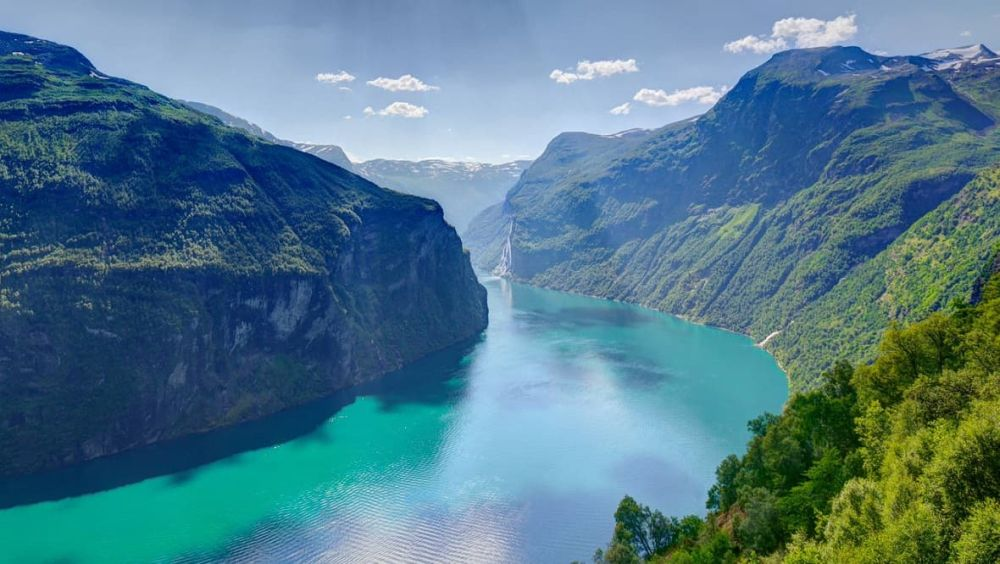

Descoperă Fiordul Geiranger - Minune UNESCO în Norvegia
Fiordul Geiranger este una dintre cele mai spectaculoase destinații din Norvegia, oferind peisaje magnifice și natură intactă:
-

Cascade spectaculoase
Fiordul Geiranger este cunoscut pentru cascadele impresionante, cum ar fi celebra cascadă Seven Sisters.
-

Puncte de belvedere panoramice
Drumul serpentinat oferă oportunități pentru fotografii spectaculoase ale fiordului și munților înconjurați.
-

Activități în aer liber
Caiacul și excursiile cu barca sunt modalități excelente de a explora apele cristaline ale fiordului.
-

Drumeții în natură
Zonele din jurul fiordului oferă trasee de drumeții în mijlocul naturii neatinse.
-

Crociera pe apă
O croazieră pe fiordul Geiranger este o modalitate relaxantă de a admira peisajele impresionante.
Concluzii
Fiordul Geiranger este o minune a naturii, cu peisaje dramatice și experiențe unice care îți vor rămâne în inimă.